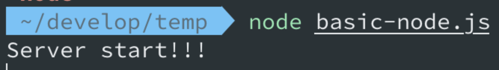
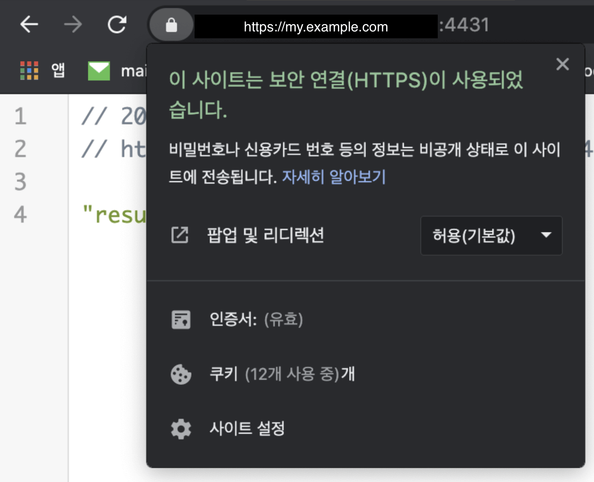

소개
- Node.js 환경에서 https설정하는 방법을 설명한다.
- 현재
my.example.com은 이미cert,key가 존재한다. - 다만 해당 파일이
pem파일로 되어있고, 현재는nginx의 https의 설정용으로 되어 있다.- 또한 현재 nginx용 ssl은
pass을 받게 되어 있다.
- 또한 현재 nginx용 ssl은
- 따라서, node에서 해당 ssl(cert, key)을 바로 사용하는 경우 에러가 발생한다.
- 현재 이미 있는 nginx용 ssl을 node.js(webpack-dev-server)에서 사용하는 방법을 설명한다.
Node.js 에서 https설정하기
- 정상적인 ssl(cert, key)가 존재하는 경우 아래와 같은 코드로 https설정이 가능하다.
- 공식Doc - https://nodejs.org/api/https.html
// curl -k https://localhost:8000/
const https = require('https');
const fs = require('fs');
const options = {
key: fs.readFileSync('test/fixtures/keys/agent2-key.pem'),
cert: fs.readFileSync('test/fixtures/keys/agent2-cert.pem')
};
https.createServer(options, (req, res) => {
res.writeHead(200);
res.end('hello world\n');
}).listen(8000);
// 또는
const https = require('https');
const fs = require('fs');
const options = {
pfx: fs.readFileSync('test/fixtures/test_cert.pfx'),
passphrase: 'sample'
};
https.createServer(options, (req, res) => {
res.writeHead(200);
res.end('hello world\n');
}).listen(8000);
Node의 공식 문서에서 알 수 있는 사실
- 확장자가
pem,key,pfx,cert을 다 지원 가능 - ca을 넣지 않아도 무방
- pass을 넣는 부분은 없음
Express에서 https설정하기
- 가장 기본이 되는 Node의 설정과 거의 동일하다.
webpack-dev-server는 내부적으로express.js을 사용하고 있기 때문에,express.js에서 정상 동작하면 사실상webpack-dev-server에서 정상 동작한다.- 이게 되면 사실상 거의 비슷한 구조인
koa2.js역시 동일한 형태로https설정이 가능하다.
const express = require('express');
const https = require('https');
const fs = require('fs');
const app = express();
// 더미 라우트 모든 req에 대해서 result을 res
app.use((req, res, next) => {
return res.status(200).json('result');
});
const PORT = process.env.PORT || 4431; // HTTPS 는 443 포트를 사용합니다
const options = {
key: fs.readFileSync(__dirname + '/key.pem'),
cert: fs.readFileSync(__dirname + '/cert.pem'),
};
// https 서버를 만들고 실행시킵니다
https.createServer(options, app).listen(PORT, () => {
console.log('Server start!!!');
});
// 또는 아래와 같이 https와 http둘다 지원되는 서버 구축 가능
const express = require('express');
const https = require('https');
const http = require('http');
const fs = require('fs');
const options = {
key: fs.readFileSync('key.pem'),
cert: fs.readFileSync('cert.cert'), // pem이건 cert이건 확장과 관계없음, 이는 base인 node.js가 지원해서 가능
};
// Create a service (the app object is just a callback).
const app = express();
// Create an HTTP service.
http.createServer(app).listen(80);
// Create an HTTPS service identical to the HTTP service.
https.createServer(options, app).listen(443);
webpack-dev-server의 https설정
module.exports = {
//...
devServer: {
https: {
key: fs.readFileSync('/path/to/server.key'),
cert: fs.readFileSync('/path/to/server.crt'),
ca: fs.readFileSync('/path/to/ca.pem'),
},
},
};
- 문서상, webpack devServer설정상의
httpsobject설정이 그대로, 더 위에서 설명한, node 혹은 express설정의 https생성(createServer) optioins로 들어간다. - This object is passed straight to Node.js HTTPS module, so see the HTTPS documentation for more information.
ssl키 local에서 생성해보기
pre-required
- openssl 이 있어야 한다.
ssl.conf
- cert파일 생성시 사용되는, ssl 설정 파일
[ req ]
default_bits = 4096
distinguished_name = req_distinguished_name
req_extensions = req_ext
[ req_distinguished_name ]
countryName = IL
countryName_default = GB
stateOrProvinceName = Center
stateOrProvinceName_default = England
localityName = Tel Aviv
localityName_default = Brighton
organizationName = CA
organizationName_default = Hallmarkdesign
organizationalUnitName = BlazeMeter
commonName = localhost
commonName_max = 64
commonName_default = localhost
[ req_ext ]
subjectAltName = @alt_names
[alt_names]
DNS.1 = localhost
Generate private key
- 비공개키 생성
$ openssl genrsa -out private.key 4096
Generate a Certificate Signing Request
- 비공개키와, ssl.conf(ssl 설정 파일)을 이용해서, sign파일(csr) 생성
openssl req -new -sha256 \
-out private.csr \
-key private.key \
-config ssl.conf
Generate the certificate
- 비공개키 + 키 sign 파일 두개를 이용해서, cert 파일 생성(실질적인 인증서 파일!)
- 이때도 ssl.conf는 동일하게 사용됨
openssl x509 -req \
-days 3650 \
-in private.csr \
-signkey private.key \
-out private.crt \
-extensions req_ext \
-extfile ssl.conf
Add the certificate to keychain and trust it:
- local에서 생성한 ssl용 cert파일은, 공식 인증기관에서 인증한 키가 아니기 때문에 실제 사용시 브라우저에서, ```알수없는 인증기관``에서 인증 과련 경고가 발생
- 아래 로직은 임의로, 본인 컴퓨터에서 해당 key을
믿을만한키로 인식 하는 방법(개발용) 이다.
sudo security add-trusted-cert -d -r trustRoot -k /Library/Keychains/System.keychain private.crt
Create a pem file from crt
- 위 과정상으로 확장자가 crt인 인증서파일을 생성하였는데, 이 확장자를 openssl명령어로 벼경 가능하다.
- 쉽게 이해하자면, 특정 유틸프로그램(openssl)로
jpg > png하는것과 비슷하다.- 즉 실질적인 기능은 동일한데, 확장자(내부 format)이 다른 type형태로 전환 가능
openssl x509 -in private.crt -out private.pem -outform PEM
Run webpack dev server
- 로컬에서 생성한 ssl (key and cert)을 가지고 webpack-dev-server or node.js 에서 https로 사용 가능하다.
npm run webpack-dev-server -- --open --https --cert private.pem --key private.key
ssl키 type 혹은 확장자 변경
- 위 간략한 ssl키 local에서 생성 과정에서 알수 있듯, openssl로 ssl이 생성한 파일의 type(pem, key, crt 등)을 변경하거나, pem 에서 key을 추출하는등의 동작이 가능하다.
- 참고: https://stackoverflow.com/questions/13732826/convert-pem-to-crt-and-key
- 참고: https://stackoverflow.com/questions/991758/how-to-get-pem-file-from-key-and-crt-files
- 여기서는 몇가지 방법반 소개한다. 더 많은 방법은 위 참고 부분을 확인
pem 파일에서 key & cert추출
- 즉 key.pem -> key.key
openssl pkey -in ./cert/key.pem -out key.key
// 위 명령어 시도시, Enter pass phrase 요청이 나옴 이때, nginx에서 쓰는 ssl.pass 파일에 기록된 값을 사용
- 또는
openssl rsa -in foo.pem -out foo.key
Convert a DER file (.crt .cer .der) to PEM
openssl x509 -inform der -in certificate.cer -out certificate.pem
Convert a PEM file to DER
openssl x509 -outform der -in certificate.pem -out certificate.der
Convert PEM to CRT (.CRT file)
openssl x509 -outform der -in certificate.pem -out certificate.crt
Convert PEM to PFX
openssl pkcs12 -export -out certificate.pfx -inkey privateKey.key -in certificate.crt -certfile CACert.crt
To remove the pass phrase on an RSA private key
openssl rsa -in key.pem -out keyout.pem
- pem 파일에서 key & cert추출 와 동일
- 설명상 실질적으로는 pem에서 pass phrase을 제거(혹은 추가?) 하는 역할
이미 있는 nginx용 ssl을 node.js(webpack-dev-server)에서 사용하는 방법
- 사실상 위의 openssl을 사용하여, pem -> key 추출 등의 여러 명령어를 사용하여, node에서 사용가능하게 변경하면 된다.
- 각 nginx ssl환경에 맞는 파일을 -> node 환경에서 사용가능하게 변경 후 사용하면됨…
- 여기서는 my.example.com에서 사용하는 nginx용 인증서를 node용으로 바꾸는 부분만 간략하게 다룬다
nginx인증서
cert.pem,key.pem,ssl.pass3개의 파일로 구성되어 있음- 주의!! - nginx하위에 현재 설정된, ssl.conf는 nginx용 conf이지 openssl에서 key, cert을 생성하기위한 conf가 아님!!!
- 일단 cert와, key가 pem으로 되어 있고, pass(passwd)사용하는걸 알 수 있다.
- node에서 사용하려면
- A.
pfx형태로 바꾸고 node 쪽의 https설정(createServer)에서 pass을 넘겨주는 형태 - B.
key.pem에서 pass을 추출(혹은 합산)해서 key을 생성하고 사용하는 형태
- A.
- 위와같이 2개의 방법을 사용 할 수 있다.
- A.의 경우 CA인증서가 필요하고, cert.pem에서 crt파일로 변경이 필요함
- B.의 경우,
key.pem -> key.key형태로 변경 후 사용 가능.
실제 적용
- 실제 서버의 webpack-dev-server에서는 B 형태로 작업하였다.
- pem -> key 변경(pass추출or합산)
openssl pkey -in ./cert/key.pem -out key.key
- cert는 기존꺼 그대로 사용해도 됨(pem이여도됨)
const express = require('express');
const https = require('https');
const fs = require('fs');
const app = express();
app.use((req, res, next) => {
return res.status(200).json('result');
});
const PORT = process.env.PORT || 4431; // HTTPS 는 443 포트를 사용합니다
const options = {
// pem -> key 확장자 만드는 위 명령어로 생성한놈, 생성시 pass잘 넣어야 정상 생서욈
key: fs.readFileSync(__dirname + '/key.key'),
// cert는 기존 pem그대로 사용 가능
cert: fs.readFileSync(__dirname + '/cert/cert.pem'),
};
// https 서버를 만들고 실행시킵니다
https.createServer(options, app).listen(PORT, () => {
console.log('Server start!!!');
});
- 서버 구동됨

- 접속시 정상 동작

- webpack-dev-server
devServer: {
public: 'local-my.example.com:3132',
https: {
key: fs.readFileSync(`${__dirname}/../../nginx-conf/certificate/key.key`),
cert: fs.readFileSync(`${__dirname}/../../nginx-conf/certificate/cert.pem`),
},
publicPath: '/',
port: 3132,
hot: true,
open: true,
inline: true,
writeToDisk: true,
disableHostCheck: true,
historyApiFallback: true,
compress: true,
},
추가 내용
- webpack-dev-server의 https 설정은, 그 설정 그대로 node의 설정에 들어간다고 생각해도 된다.
- node 에서
passphrase: 'sample'와 같이 비번(passphrase)을 직접 입력하면, 굳이 pem 으로 (pass추출or합산) 하지 않아도 동작 가능하다. - 다만 이 글에서는 코드내에 passwd 노출이 싫었고, 각 파일들 pem, crt, key을 추출 합산 하는게 가능하다는걸 소개하고 싶었다. 각 개발 환경에 맞게 응용해서 쓰면 될꺼 같다.